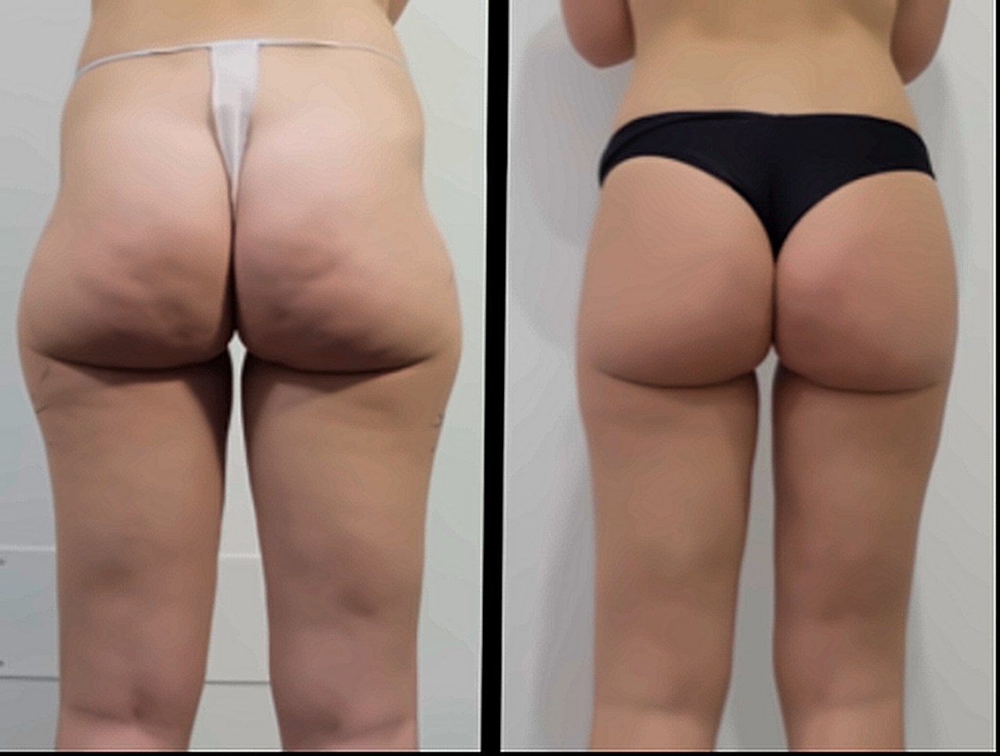
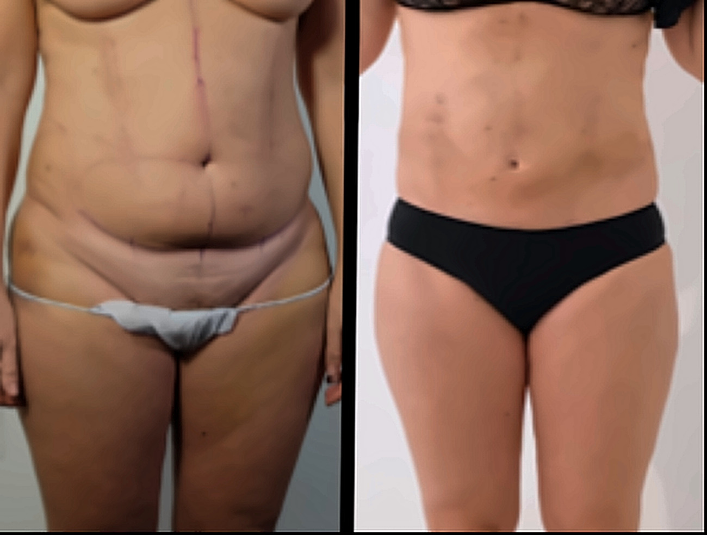
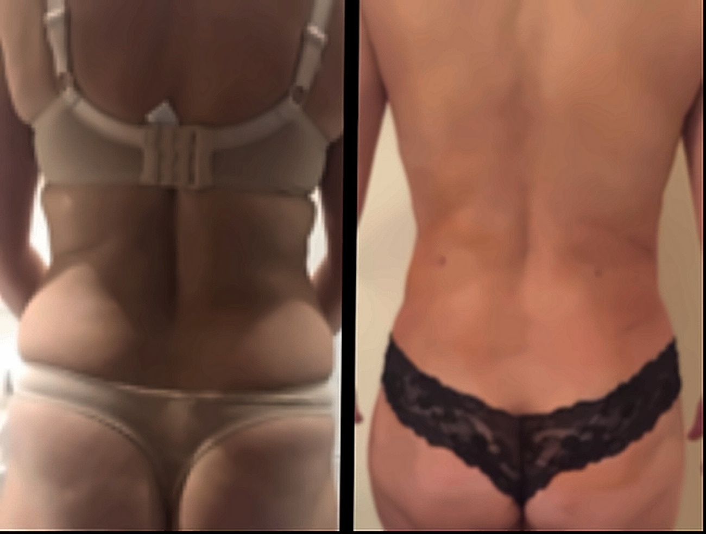
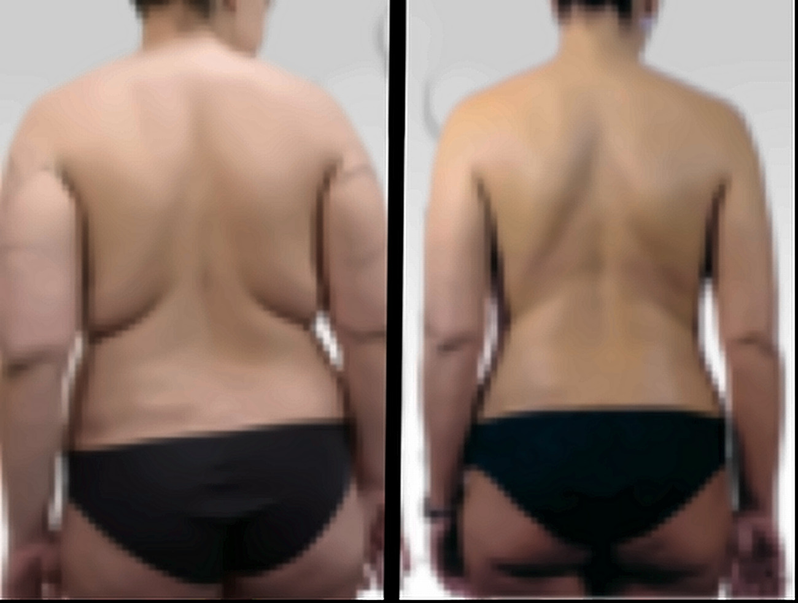

Fotografie di casi reali. I risultati variano da persona a persona.
La maggior parte di chi prende in considerazione la liposcultura ha già fatto il proprio lavoro. Allenamento costante, alimentazione equilibrata, massaggi, trattamenti estetici — e una zona che semplicemente persiste. L’addome, i fianchi, la coscia esterna, l’interno del ginocchio, il braccio. Raramente è una questione di impegno: il modo in cui il corpo distribuisce il grasso dipende in larga parte dalla genetica, e nessuna disciplina può modificarne completamente la distribuzione.
La liposcultura consente di intervenire su questi depositi attraverso piccole incisioni e sottili microcannule. Il tessuto adiposo viene rimosso in quantità mirate dalle aree selezionate, rispettando i tessuti circostanti. Quando indicato, il grasso prelevato può essere opportunamente trattato e utilizzato per ripristinare volume in altre zone, come il viso o altre aree del corpo che ne possano beneficiare.
L’obiettivo è la proporzione, non la semplice riduzione. La differenza si percepisce spesso prima di tutto nel modo in cui vestono gli abiti, e poi nella silhouette, che appare più equilibrata pur rimanendo pienamente riconoscibile.
Una cosa va detta con chiarezza: la liposcultura non è un trattamento dimagrante né una scorciatoia. È indicata soprattutto per persone già vicine al proprio peso stabile, con una buona capacità della pelle di retrarsi. Se non è ancora il momento giusto, il Dr. Uccellini glielo dirà con chiarezza.